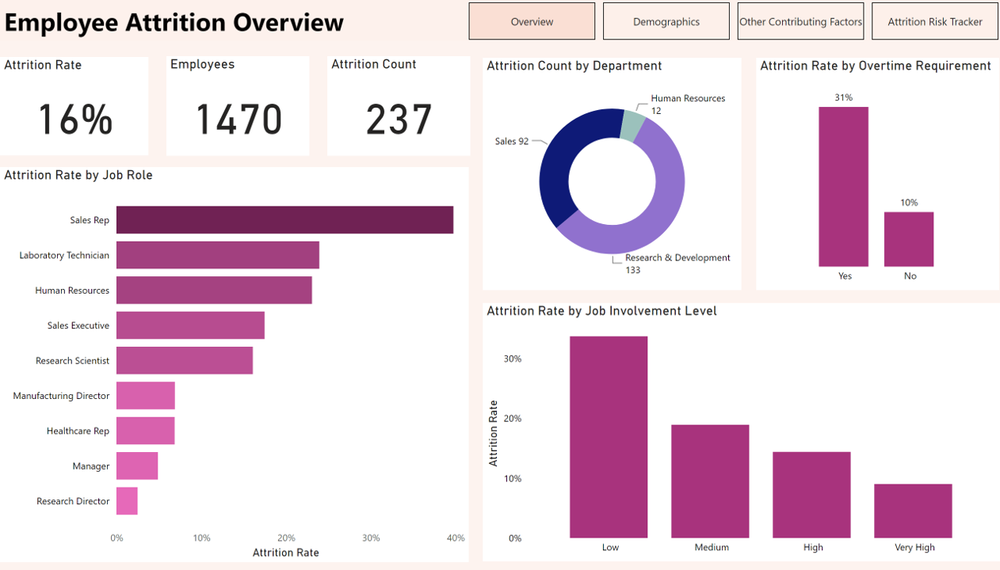
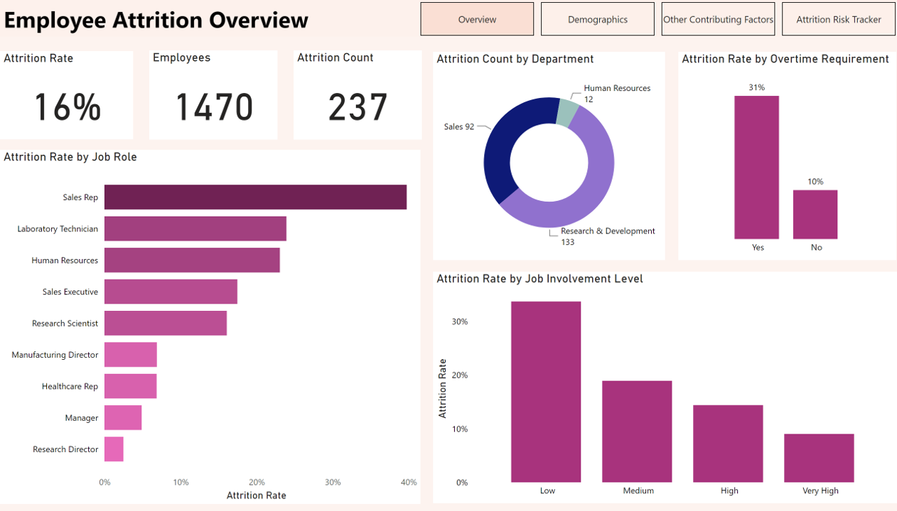

In this project, I analyzed the impact of large-scale supply changes on an online supermarket. I wrote SQL queries to compare overall sales and profit at various timelines before and after the change.I identified the areas of the business most affected by the change by further analyzing the sales of each area of the business before and after the change.I used PostgreSQL for this project.
 

Cleaned data and conducted exploratory data analysis using MS Excel. Imported cleaned data into Power BI, wrote data analysis expressions (DAX) to measure key performance indicators and visualized insights onto report pages. Identified reasons for employee attrition and made recommendations on ways to combat employee attrition based on insights. Created a tracker to enable HR executive track employees likely to leave.
Leveraged MS Excel and Power BI to analyze the revenue of an edu-tech firm. Used MS Excel for data consolidation, data cleaning and exploratory data analysis. Leveraged Power BI for more detailed data analysis and visualization. Conducted a year-to-date revenue analysis and a historical analysis to understand revenue of the firm in the current year and over the entire period. Extracted insights on revenue, premium subscribers, paid courses and subjects in the firm's catalogue. Made recommendations to increase revenue for the next quarter based on insights
.png)
Created entity relationship diagram to represent the data model of the database using DB Diagram. Wrote SQL queries to retrieve items that were added to cart and purchased and items that were added to cart but not purchased. Assessed the effectiveness of different marketing campaigns by writing queries to compare purchases and new users during each campaign
Performed data assessment, data cleaning data analysis and visualization using Python libraries; NumPy, Pandas, Matplotlib and Seaborn. Leveraged statistical tests to validate insights derived through bivariate and multivariate analysis. Identified variables that affect the pricing of properties which would help a real estate company make data driven decisions about pricing their property listings.
Performed data cleaning and exploratory data analysis on a medical appointment data using Python libraries NumPy, Pandas and Matplotlib. Identified characteristics of patients and other features that can be used to predict if a patient will show up for their medical appointment.
Gathered and consolidated data from Twitter, a web page and a csv file using Numpy and Pandas. Assessed and cleaned data to remove data quality issues. Analyzed and visualized data by leveraging Matplotlib and Seaborn.